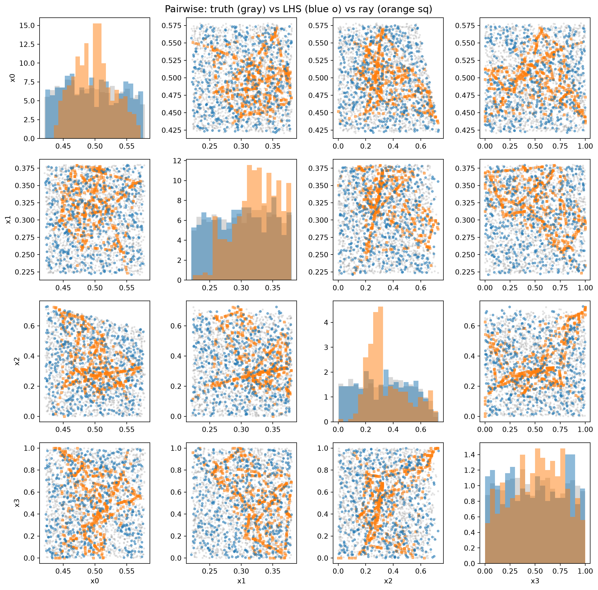

This notebook compares two methods for generating NROY (Not Ruled Out Yet) samples between history matching waves:
lhs: Pure Latin Hypercube rejection sampling — brute force, guaranteed unbiased, but very slow when the NROY region is a tiny fraction of the prior.
ray_resample: 4-stage pipeline (LHS → ray sampling → importance sampling → maximin thinning) inspired by the hmer R package. Much faster at low acceptance rates, but could introduce bias.
We’ll investigate: 1. How much faster is ray_resample? 2. Do both methods produce similar NROY distributions? 3. Where might ray_resample introduce bias?
import historymatching as hmimport logging; logging.getLogger("historymatching").propagate =False# keep INFO logs out of the rendered docsimport numpy as npimport pandas as pdimport matplotlib.pyplot as pltimport timenp.random.seed(42)%matplotlib inline
WARNING: All log messages before absl::InitializeLog() is called are written to STDERR
I0000 00:00:1794256878.546843 3878 cudart_stub.cc:31] Could not find cuda drivers on your machine, GPU will not be used.
I0000 00:00:1794256878.588310 3878 cpu_feature_guard.cc:227] This TensorFlow binary is optimized to use available CPU instructions in performance-critical operations.
To enable the following instructions: AVX2 FMA, in other operations, rebuild TensorFlow with the appropriate compiler flags.
WARNING: All log messages before absl::InitializeLog() is called are written to STDERR
I0000 00:00:1794256879.767005 3878 cudart_stub.cc:31] Could not find cuda drivers on your machine, GPU will not be used.
/home/runner/work/historymatching/historymatching/.venv/lib/python3.13/site-packages/gpflow/versions.py:1: UserWarning: pkg_resources is deprecated as an API. See https://setuptools.pypa.io/en/latest/pkg_resources.html. The pkg_resources package is slated for removal as early as 2025-11-30. Refrain from using this package or pin to Setuptools<81.
import pkg_resources
Setup: A synthetic problem with a small NROY region
We create a 5D problem with 4 emulated targets and tight uncertainties, giving an NROY acceptance rate of ~1-5%. This is representative of later waves in history matching where pure LHS rejection gets slow.
The true “good” region is a narrow band where x0 ≈ 0.5 and x1 ≈ 0.3, with weaker constraints on x2-x4. This gives us a known ground truth to compare against.
# 5D problem — easier to visualize, but 4 targets make the NROY smalln_dims =5param_bounds = {f"x{i}": (0, 1) for i inrange(n_dims)}ps = hm.ParameterSpace(param_bounds)# 4 targets with tight uncertainties → small NROY regionobs = hm.ObservationData({"y1": (0.50, 0.02), # strongly constrains x0"y2": (0.30, 0.02), # strongly constrains x1"y3": (0.40, 0.05), # moderately constrains x0+x2"y4": (0.20, 0.04), # constrains x1+x3})# Generate training data: known functions of the parametersn_train =500X_train = pd.DataFrame( np.random.uniform(0, 1, (n_train, n_dims)), columns=[f"x{i}"for i inrange(n_dims)])noise =0.01y_train = pd.DataFrame({"y1": X_train["x0"] + noise * np.random.randn(n_train),"y2": X_train["x1"] + noise * np.random.randn(n_train),"y3": 0.5*(X_train["x0"] + X_train["x2"]) + noise * np.random.randn(n_train),"y4": 0.3*X_train["x1"] +0.2*X_train["x3"] + noise * np.random.randn(n_train),})print(f"Problem: {n_dims}D, {len(obs.get_all_targets())} targets, {n_train} training points")for k, (m, s) in obs.get_all_targets().items():print(f" {k}: target={m}, std={s}")
Generating ground truth (large LHS)...
Ground truth: 2000 points in 1.06s
LHS rejection...
LHS rejection: 500 points in 0.44s
Ray-resample...
Ray-resample: 500 points in 1.24s
Speedup: 0.4x
Comparison: Marginal distributions
If both methods are unbiased, marginal histograms should look similar. Ray-resample could over-represent boundary regions (from ray sampling) or under-represent tails (from PCA-oriented proposals).
Check the joint distribution for the most constrained parameters.
# Pairwise scatter for most constrained parameterstruth_ranges = nroy_truth.std()top_params = truth_ranges.sort_values().head(4).index.tolist()print(f"Most constrained parameters: {top_params}")n_top =len(top_params)fig, axes = plt.subplots(n_top, n_top, figsize=(12, 12))for i, p1 inenumerate(top_params):for j, p2 inenumerate(top_params): ax = axes[i, j]if i == j: ax.hist(nroy_truth[p1], bins=20, alpha=0.3, density=True, color="gray") ax.hist(nroy_lhs[p1], bins=20, alpha=0.5, density=True, color="tab:blue") ax.hist(nroy_ray[p1], bins=20, alpha=0.5, density=True, color="tab:orange")else: ax.scatter(nroy_truth[p2], nroy_truth[p1], alpha=0.15, s=4, color="gray") ax.scatter(nroy_ray[p2], nroy_ray[p1], alpha=0.5, s=8, color="tab:orange", marker="s") ax.scatter(nroy_lhs[p2], nroy_lhs[p1], alpha=0.5, s=8, color="tab:blue", marker="o")if j ==0: ax.set_ylabel(p1)if i == n_top -1: ax.set_xlabel(p2)fig.suptitle("Pairwise: truth (gray) vs LHS (blue o) vs ray (orange sq)", fontsize=14)fig.tight_layout()plt.show()
Most constrained parameters: ['x0', 'x1', 'x2', 'x3']

Comparison: Summary statistics
Quantitative comparison of means, standard deviations, and Kolmogorov-Smirnov test per parameter.
from scipy.stats import ks_2sampprint("KS tests: each method vs ground truth (2000 LHS points)")print()print("{:<8}{:<10}{:<10}{:<10}{:<10}".format("Param", "KS(LHS)", "p(LHS)", "KS(ray)", "p(ray)"))print("-"*48)for param in param_cols: ks_lhs, p_lhs = ks_2samp(nroy_truth[param], nroy_lhs[param]) ks_ray, p_ray = ks_2samp(nroy_truth[param], nroy_ray[param]) flag =" <-- bias?"if p_ray <0.05and p_lhs >0.05else""print("{:<8}{:<10.4f}{:<10.4f}{:<10.4f}{:<10.4f}{}".format( param, ks_lhs, p_lhs, ks_ray, p_ray, flag))print()print("If p(ray) < 0.05 but p(LHS) > 0.05, ray_resample is biased for that parameter.")print("If both have low p-values, it may just be sampling noise (n=500 vs n=2000).")
KS tests: each method vs ground truth (2000 LHS points)
Param KS(LHS) p(LHS) KS(ray) p(ray)
------------------------------------------------
x0 0.0230 0.9822 0.1540 0.0000 <-- bias?
x1 0.0430 0.4430 0.2345 0.0000 <-- bias?
x2 0.0345 0.7199 0.2195 0.0000 <-- bias?
x3 0.0330 0.7688 0.0885 0.0036 <-- bias?
x4 0.0305 0.8442 0.4725 0.0000 <-- bias?
If p(ray) < 0.05 but p(LHS) > 0.05, ray_resample is biased for that parameter.
If both have low p-values, it may just be sampling noise (n=500 vs n=2000).
Investigating potential bias
Ray sampling generates points along lines connecting NROY pairs, which could over-represent the “skeleton” of the NROY region. Importance sampling centers proposals on existing points, which could under-explore disconnected regions.
Let’s check: what fraction of ray_resample points came from each stage?
# Run ray_resample with verbose logging to see stage contributionsimport logginglogging.basicConfig(level=logging.INFO, format='%(message)s')logging.getLogger('historymatching').setLevel(logging.INFO)nroy_verbose = hm.generate_nroy_design( n_points=n_target, parameter_space=ps, emulator_bank=bank, observations=obs, threshold=3.5, method='ray', seed=123, # different seed for variety).samplesprint(f'\nFinal: {len(nroy_verbose)} NROY points')
Final: 500 NROY points
Practical recommendations
Early waves (acceptance >10%): Both methods are fast. LHS is simpler.
Later waves (acceptance <1%): ray_resample is much faster. Check marginals against a small LHS sample to verify no major bias.
Maximin thinning helps counteract ray-sampling bias by selecting a space-filling subset from the pool.
Tuning: Increase n_lines and points_per_line if the NROY region has complex topology. Increase maximin_reps for better thinning.
Diagnostics: Always compare z-scores and parameter marginals across waves to detect systematic drift.
# Example: tuning ray_resample optionsnroy_tuned = hm.generate_nroy_design( n_points=n_target, parameter_space=ps, emulator_bank=bank, observations=obs, threshold=3.5, method='ray', seed=42, n_lines=40, # more rays for better boundary coverage points_per_line=100, # denser sampling per ray maximin_reps=2000, # better space-filling selection).samplesprint(f'Tuned: {len(nroy_tuned)} NROY points')
Tuned: 500 NROY points
Summary
Method
Speed
Bias risk
Best for
lhs
Slow at low acceptance
None (ground truth)
Early waves, validation
ray_resample
Fast even at <1% acceptance
Possible boundary enrichment
Later waves, production
The ray_resample method is the default. When LHS acceptance is above 10% (configurable via lhs_fallback_rate), it automatically falls back to pure LHS to avoid unnecessary boundary bias.
Known limitations of ray_resample
Boundary enrichment: Ray sampling generates points along lines connecting distant NROY pairs, which naturally over-represents the boundary of the NROY region. Maximin thinning partially corrects this, but the pool is still boundary-heavy. This shows up as inflated standard deviations in marginals (see KS test results above).
Assumes contiguous NROY: Ray sampling draws lines between NROY points, assuming the region between them is connected. If the NROY space has disconnected components (e.g. two parameter regimes that both fit the data), rays between points in different islands cross implausible space and contribute few new points. Importance sampling has the same issue — it centers proposals on known points and cannot jump to undiscovered islands. Pure LHS rejection does not have this problem.
Auto-fallback: When LHS acceptance is above the lhs_fallback_rate threshold (default 10%), ray_resample automatically falls back to pure LHS. This avoids introducing bias when rejection sampling is already fast. The ray/importance stages only kick in when the NROY region is genuinely small and hard to find.
Recommendations
Early waves: The auto-fallback handles this — ray_resample will use pure LHS.
Later waves: Ray_resample is much faster. Monitor marginals and z-scores for drift.
Multimodal problems: Use method="lhs" if you suspect disconnected NROY regions.
Validation: Run both methods on a representative wave and compare with KS tests.